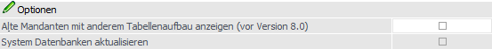
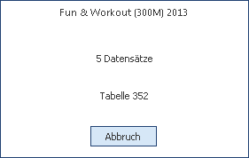

Es kann vorkommen, dass zwischen zwei Versionen eine Datenstandsänderung (hinzufügen von neuen Feldern oder Tabellen) durchgeführt wird. Wenn dies der Fall ist, müssen die Datenstände, mit denen man arbeitet, an diese neue Datenstruktur angepasst werden. Dies kann über den Menüpunkt
1 WinLine ADMIN
1 System
1 Upsize Datenstand
realisiert werden. Hierbei gibt es zwei Möglichkeiten, welche nachfolgend beschrieben werden:
ü Automatische Umstellung
In dem
Register "Automatisch" (aktuelles Register) können alle vorhandene Mandanten
automatisch umgestellt werden.
ü Manuelle Umstellung
In dem
Register Upsize Datenstand -
Manuell können einzelne Datenstände umgestellt werden, wobei hier nicht nur
eine Datenstandsaktualisierung durchgeführt werden kann, sondern es kann auch
ein Datenstand von einem Ort zu einem anderen Transferiert werden, z.B. von
einer Datenbank in eine andere oder dergleichen.
Register "Automatisch"
Wenn der Menüpunkt aufgerufen wird, werden alle Datenbanken angezeigt, die über die Datenbankverbindungen eingetragen sind.
Optionen

Ø Alte Mandanten mit anderem Tabellenaufbau anzeigen (vor Version 8.0)
Durch Aktivieren dieser Checkbox werden auch die Datenbankverbindungen angezeigt, die von einer älteren Programmversion stammen. Damit können dann auch die "alten" Datenstände auf eine aktuelle Datenstandsversion umgestellt werden.
Ø System Datenbank aktualisieren
Die Checkbox wird automatisch angehakt, wenn ein Upsize der Systemdatenbank notwendig ist. Das ist der Fall, wenn die in der Datei gespeicherte Programmversion nicht mit der aktuellen Programmversion übereinstimmt. Ist diese Checkbox aktiviert, dann wird auch für die Systemdatenbank ein Upsize durchgeführt, d.h. die Tabellenstruktur wird überprüft und ggf. an die aktuelle Version angepasst.
Hinweis
Die Checkbox ist immer gegrayed und kann nicht manuell editiert werden. Wenn ein Upsize der Systemdatenbank durchgeführt werden soll, obwohl dieses lt. WinLine nicht notwendig wäre, so kann dieses im Register Upsize Datenstand - Manuell (Button "Upsize Systemdatenbanken") durchgeführt werden.
Tabelle "Datenbanken"
In der Tabelle werden alle Datenbanken mit Mandantendaten angezeigt. Erst durch Anklicken des Buttons "Anzeigen" werden alle Datenbankverbindungen auf ihre Gültigkeit geprüft bzw. erst damit werden auch die "alten" Datenbankverbindungen (von Vorversionen) angezeigt. Dabei wird gleich festgestellt, ob eine Datenbank upgesized werden muss oder nicht, wobei die Datenbanken mit einer älteren Datenstandsversion gleich zum Upsize markiert werden. Als Ergebnis werden dann auch die einzelnen Mandanten, die sich in der Datenbank befinden, angezeigt.
Ø Auswahl
Ist die Checkbox aktiv, muss die Datenbank mit allen darin befindlichen Mandanten umgestellt werden. Ist die Checkbox inaktiv, hat die Datenbank eine aktuelle Datenstandsversion.
Ø Mandant
Hier wird die Mandantennummer angezeigt.
Ø Typ
Hier wird angezeigt, wie die Daten verwaltet werden. Dabei gibt es die Möglichkeit zwischen SQL und POS.
Ø Server
Hier wird der Server angezeigt, in dem der Mandant verwaltet wird.
Ø Database
Hier wird die Datenbank angezeigt, in der der Mandant verwaltet wird.
Ø Prog.Version
Hier wird die Programmversion angezeigt, unter der der Datenstand zuletzt aufgerufen wurde. Diese Nummer ist auch das Kriterium für die Datenumstellung selbst.
Ø Datenst.Version
Dieser Wert hat nur Informationsgehalt - ist nicht entscheidend für die Umstellung.
Ø Unicode
Bei Aktivierung dieser Checkbox wird der Datenstand des selektierten Mandanten auf Unicode umgestellt. Die Checkbox-Einstellung gilt für eine gesamte Datenbank, d.h. wenn mehrere Mandanten in einer Datenbank gehalten werden, werden alle Mandanten auf Unicode umgestellt. Die Checkbox ist standardmäßig nicht aktiviert.
Bei der Unicode-Umstellung werden alle Text- und Multiline-Spalten vom Typ "varchar" auf "nvarchar" umgestellt und Texte und Multiline-Felder von ANSI auf Unicode-Kodierung geändert (hierbei wird nach UCS-2 konvertiert (also 16-bit Unicodezeichen), wie es z.B. ab MS Windows 2000/XP für die interne Darstellung von Text verwendet wird).
Wahlweise kann das Upsizen des Mandanten auch ohne Unicode-Umstellung durchgeführt werden. Hierfür bleibt die Checkbox "Unicode" deaktiviert. Beim Upsizen werden keine Spalten auf Typ "nvarchar" umgestellt und keine Daten werden auf einer Unicodezeichen-Kodierung umgestellt.
Hinweis
Ein Upsize mit Unicode-Umstellung kann erheblich mehr Zeit in Anspruch nehmen als ein Upsize ohne Unicode-Umstellung, da wesentlich mehr Daten bei der Unicode-Umstellung 1x1 kopiert werden müssen. In dieser möglichen Zeitersparnis liegt der Vorteil von einem Upsize ohne Unicode-Umstellung.
Ein "ANSI"-Mandant (d.h. ein Mandant, welcher noch nicht auf Unicode umgestellt worden ist) kann nach wie vor in der WinLine verwendet werden. Hierbei werden die ANSI-Daten aus dem Datenstand gelesen und temporär für das Arbeiten im Programm auf Unicode umgestellt. Es gilt hierbei allerdings die Einstellung im MS Windows für die 'Sprache für Nicht Unicode Programme" für die Unicode-Umstellung der ANSI-Zeichen, welche vom ODBC-Treiber durchgeführt wird. Diese Tatsache führt dazu, dass bei Beibehaltung von ANSI Datenstände, den Umgang mit Sonderzeichen, z.B. bei osteuropäische Sprachzeichen, identisch zu früheren non-Unicodefähigen WinLine-Versionen bleibt.
Ø Sprache
Wählen Sie mit dieser Listbox-Einstellung die Sprache, welche für die Unicode-Umstellung bei dem Upsizen anzuwenden ist. Standardmäßig ist die Sprache aus der mesonic.ini hinterlegt (Parameter: Language=' '). Jede Sprache ist dabei mit einer bestimmten "Codepage" für die Umstellung von Daten von ANSI auf Unicode verbunden. Die folgenden Codepages werden bei der jeweiligen WinLine-Sprache für die Unicode-Umstellung verwendet:
|
Codepage |
Sprache |
|
1252 |
Deutsch |
|
1252 |
Englisch |
|
1251 |
Russisch |
|
1252 |
Italienisch |
|
1254 |
Türkisch |
|
1250 |
Ungarisch |
|
1250 |
Slowakisch |
|
1250 |
Tschechisch |
|
1250 |
Polnisch |
|
1252 |
Spanisch |
|
1250 |
Slowenisch |
|
1250 |
Rumänisch |
|
1250 |
Kroatisch |
|
1250 |
Albanisch |
|
1256 |
Farsi |
Bei Wahl einer "westeuropäische" Sprache, also einer Sprache, welche mit der Codepage "1252" verbunden ist, wird die Umstellung auf Unicode mit ALTER TABLE vom SQL Server selbst durchgeführt. Nur Tabellen mit Text-Spalten (Multiline) müssen nach wie vor kopiert werden, da das ALTER TABLE diese nicht umstellen kann.
Bei Wahl einer anderen Sprache für das Upsize wird die Unicode-Konvertierung von einer WinLine-internen Funktion anhand der hinterlegten Codepage-Zeichen durchgeführt. Dabei wird die Standardfunktion der ALTER TABLE vom SQL-Server nicht verwendet.
Ø Startperiode
In diesem Feld wird das Jahr des Beginns des Wirtschaftsjahres des jeweiligen Mandanten angezeigt.
Ø Filiale
Hier wird nur dann etwas angezeigt, wenn es sich um eine Filial-Zentral-Installation handelt.
Achtung
Die nächsten 3 Checkboxen können nur dann bearbeitet werden, wenn der Mandant aus einer Version 7.0 oder kleiner übernommen wird.
Ø Mandantenunabhängige Daten übernehmen
Diese Option ist nur dann verfügbar, wenn es sich um einen Datenstand kleiner Version 7.0 handelt. Ist die Checkbox aktiv, dann werden die mandantenunabhängigen Daten, die in älteren Programm-Versionen noch pro Mandant gespeichert wurden, in eine allgemeine Datenbank (Systemdatenbank) übernommen. Dabei handelt es sich um die Datenbereiche
ü WinLine Listgenerator
ü KN8-Warenkatalog
ü Postleitzahlen
ü Bankleitzahlen
ü und vieles mehr
Bleibt die Checkbox inaktiv, werden die mandantenunabhängigen Daten nicht übernommen.
Ø Filter übernehmen
Diese Option ist nur dann verfügbar, wenn es sich um einen Datenstand kleiner Version 7.0 handelt. Ist die Checkbox aktiv, dann werden die im Mandanten gespeicherten Filter, die in älteren Programm-Versionen noch pro Mandant gespeichert wurden, in eine allgemeine Datenbank (Systemdatenbank) übernommen. Bleibt die Checkbox inaktiv, werden die Filter nicht übernommen.
Ø Vorlagen übernehmen
Diese Option ist nur dann verfügbar, wenn es sich um einen Datenstand kleiner Version 7.0 handelt. Ist die Checkbox aktiv, dann werden die im Mandanten gespeicherten Vorlagen, die in älteren Programm-Versionen noch pro Mandant gespeichert wurden, in eine allgemeine Datenbank (Systemdatenbank) übernommen. Bleibt die Checkbox inaktiv, werden die Vorlagen nicht übernommen.
Achtung
Wenn mehrere Mandanten die gleichen allgemeinen Daten beinhalten, so werden bestehende Daten überschrieben - d.h. es werden die Daten behalten, die im letzten Mandanten gespeichert sind.
Ø Beschreibung
Hier wird die Beschreibung des Mandanten aus den Datenbankverbindungen angezeigt.
Tabellenbuttons
Ø alle Ordner öffnen / alle Ordner schließen
Mit Hilfe dieser Buttons können die Datenbanken in der Tabelle (d.h. die Anzeige der Mandanten) geschlossen oder geöffnet werden.
Mit dieser Option können alle Datenbankeinträge deaktiviert werden.
Mit dieser Option können alle Mandanten / Datenbanken in der Tabelle für das Upsize selektiert werden, wenn vorher kein Mandant / keine Datenbank vorgeschlagen wurde.
Ø Ausgabe Excel
Durch Anwahl des Buttons "Ausgabe Excel" wird der Inhalt der Tabelle an Microsoft Excel übergeben.
Ø Tabelleneinstellungen speichern
Die Spalten einer Tabelle können grundsätzlich an beliebige Positionen verschoben, bzw. in der Breite entsprechend angepasst werden. Durch Anwahl des Buttons "Tabelleneinstellungen speichern" werden die Einstellungen benutzerspezifisch gespeichert und bei dem nächsten Aufruf des Programmpunktes wieder vorgeschlagen.
Ø Gesamteinstellungen speichern…
Im Gegensatz zu "Tabelleneinstellungen speichern" können mit "Gesamteinstellungen speichern" mehrere Tabellenaufbauten gespeichert und nach Wunsch geladen werden. Zusätzlich werden Sonderfunktionen der Tabelle (z.B. "Spalte gruppieren") ebenfalls bei der Speicherung bedacht.
Buttons
Ø Ok
Durch Drücken des Buttons "Ok" bzw. der Taste F5 wird die Umstellung aller ausgewählten Datenbanken durchgeführt.
Hinweis
Nachdem die Umstellung gestartet wurde, wird der Fortschritt in einem eigenen Fenster dargestellt. In diesem Fenster besteht auch die Möglichkeit die Umstellung durch Drücken des Abbruch-Buttons zu beenden.

Anschließend erscheint eine Meldung, dass die Umstellung unterbrochen wurde, und eine weitere, dass die Umstellung nicht beendet wurde. Diese Fehlermeldungen sind natürlich auch in der Protokoll-Datei (mit dem Namen "Upsize Log(Uhrzeit).SPL") enthalten, die bei der Umstellung erzeugt wurde.
Ø Ende
Mit Hilfe des Buttons "Ende" bzw. der Taste ESC wird das Fenster geschlossen. Die Mandanten, die nicht der aktuellen Programmversion entsprechen, können nicht bearbeitet werden.